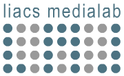

|
 |
Audio Processing and Indexing Project Page <Classifying albums based on dynamic range values> (Last updated: 14-1-2020) |
||
|
Contents
|
Project Members
This project tries to predict the year an album was released in based on the dynamic range values. In a second experiment it tries to determine the genre based on its dynamic range value. A dataset of dynamic range values was used to predict the year an album was released in and its genre. Determining the year turned out to be less succesful than expected with no impressive results. The values turned out to be a better classifier for the genres, with accuracies reached of up to 99% for distinguishing classical music from rock music. But even for combinations of more modern music genres, accuracies of over 70% are reached. To make a song stand out from all other, producers and mastering engineers try to increase the loudness of songs played at the same master volume. This phenomenon is called the loudness war. Compression is used which lowers the dynamic range. The trend of decreasing dynamic range could be a good classifier for determining in which year an album was released. Dynamic range data was scraped from an online database and cross-referenced using the Last.fm API to get the corresponding genres. Several machine learning classifiers are used to determine the accuracy of the predictions of both year and genre. Python was used to build the necessary software. The Last.fm API was used to get genre data for artists.
|
For the full reference list see the technical paper. |
|